qwanarings example
The qwanarings command-line utility is used to automatically detect ring boundaries in wood anatomy images whose cells have already been measured using qwanaflow.
Running from the command-line
Typically, qwanarings will be run on the output directory of qwanaflow as follows:
# Here, the exclamation mark indicates that this command is run by the shell and not by python
# Indeed, qwanarings should be launched from the command line
!qwanarings --input_dir test_output
Processing test_image...
Reading input files
runtime : 0:00:00.190550
Identifying the first and last cells of each ring
runtime : 0:00:00.240412
Finding connected components from adjacency graph of first/last cells to identify ring boundaries
runtime : 0:00:01.804033
Regions with multiple lastcells in the same radial_file: []
Find boundary segments to merge with adjacency
runtime : 0:00:04.992572
runtime : 0:00:06.940359
Iterative search of boundary segments to merge from distances
runtime : 0:00:11.673447
Find ring sequences & draw rings
/home/marc/Documents/gennaretti_lab/analyses/packages/qwanamiz/src/qwanamiz/rings_functions.py:1707: FutureWarning: `RegionProperties.major_axis_length` is deprecated starting in version 0.26 and will be removed in version 2.0. Use `RegionProperties.axis_major_length` instead.
major_len = prop.major_axis_length
Merge candidates: []
[]
[]
Selected pairs: set()
Solo regions: []
Missing selected: set()
Top → [4, 1, 3, 8, 6, 2, 7, 5]
Bottom→ [4, 1, 3, 8, 6, 2, 7, 5]
save ring edition file
Edit file written to: test_output/test_image_outputs/test_image_edit.txt
runtime : 0:00:16.041080
Refine ring boundaries & calculate ring properties
/home/marc/Documents/gennaretti_lab/analyses/packages/qwanamiz/src/qwanamiz/qwanarings.py:513: RuntimeWarning: invalid value encountered in cast
year_image.astype(int),
runtime : 0:00:22.507114
save outputs
Final PNG image saved : test_output/test_image_outputs/test_image_img.png
Saved workflow output to test_output/test_image_outputs
runtime : 0:00:25.045563
The qwanarings command supports the following arguments which can be viewed when providing the --help argument:
!qwanarings --help
usage: qwanarings [-h] --input_dir INPUT_DIR [--pixel-size PIXEL]
[--minimum-cells MINCELLS] [--first-year FIRSTYEAR]
[--iterations ITERATIONS]
options:
-h, --help show this help message and exit
--input_dir INPUT_DIR
Path to the main directory containing subfolders for
each processed image. Suffixes '_imgs.npz',
'_cells.csv' and '_adjacency.csv' must be in the
subfolders to obtain the input files.
--pixel-size PIXEL Size of a pixel in the wanted measurement unit.
Defaults to 0.55042690590734 micrometers.
--minimum-cells MINCELLS
The minimum number of cells in a ring-boundary region
to consider it. Defaults to 4.
--first-year FIRSTYEAR
The calendar year when the first ring was formed, used
for assigning cells to years. Defaults to 1 (year
unknown).
--iterations ITERATIONS
Number of refinement iterations for boundary segment
merging. Default = 1.
Detailed qwanarings usage
The remainder of this document explains in detail how qwanarings works behind the scences to detect ring boundaries. This may be useful to users who want better control over the workflow or would like to leverage these functions individually in their analyses.
Setting up the required libraries and variables
The following Python libraries need to be imported for the following code to work. They are automatically imported when you run qwanarings from the command-line.
from qwanamiz import rings_functions as qrings # main qwanarings functions
import os # operating system-related functions
import numpy as np # library for arrays and matrics
import pandas as pd # manipulating data tables as DataFrames
from matplotlib import pyplot as plt # plotting functions
import networkx as nx # graph structures
from skimage.measure import regionprops_table # measuring shape properties
A few variables that you would usually pass as command-line arguments are also necessary to make the code work:
pix_to_um = 0.55042690590734 # the size per pixel in micrometers
prefix = "test_output/test_image_outputs/test_image" # a prefix for the input/output files to use
firstyear = 1 # the year of the first ring, defautls to 1 (unknown)
mincells = 4 # the minimum number of cells in a boundary region to consider it
Now, we can read in the outputs from qwanaflow, which are used as inputs to qwanarings:
# Reading the required input files
celldata, adjacency, expanded_labels, prediction = qrings.read_qwanarings_inputs(prefix)
# Doing the same thing for the array of cell labels that does not include their cell wall
lumen_labels = np.load("test_output/test_image_outputs/test_image_imgs.npz")['labs']
As a reminder from the qwanaflow detailed workflow, here is the image that we will be working with :

The labeled image shows the lumens of the cells identified by qwanaflow:
plt.imshow(lumen_labels)
<matplotlib.image.AxesImage at 0x7f65de7992b0>
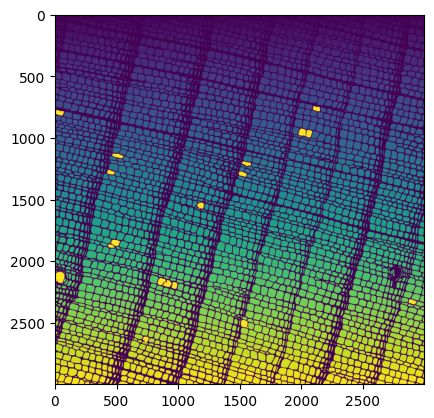
Identifying cells involved in ring transitions
The first step in finding tree-ring boundaries is to determine where transitions from latewood to earlywood occur. Indeed, the last cells of any given year are latewood whereas the first cells of a year are earlywood. By finding out where that transition occurs, it should be possible to draw the boundaries between years.
qwanarings relies on the commonly used Mork’s index to classify cells as either latewood or earlywood, that is, if a cell’s wall thickness is at least one quarter that of its diameter, it is considered latewood, otherwise it is considered earlywood. The function morks_index accordingly adds a column called 'woodzone' to the DataFrame of cell metadata to indicate its type.
# Classifying cells as early- or latewood based on Mork's index
celldata = qrings.morks_index(celldata)
# The classification is added to column 'woodzone'
celldata['woodzone'].value_counts()
woodzone
earlywood 3288
latewood 1061
Name: count, dtype: int64
Visualizing which cells were identified as either type confirms the relevance of Mork’s index for this task:
# Extracting the labels of earlywood and latewood cells
earlywood_labels = celldata[celldata['woodzone'] == 'earlywood']['label'].values
latewood_labels = celldata[celldata['woodzone'] == 'latewood']['label'].values
plt.imshow(np.isin(lumen_labels, earlywood_labels) + 2 * (np.isin(lumen_labels, latewood_labels)))
<matplotlib.image.AxesImage at 0x7f65de612c10>
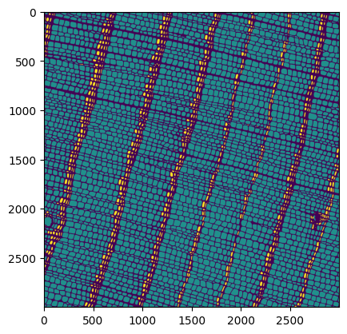
Using that classification, we can leverage the region adjacency graph (a data structure that tells use which cells are adjacent to each other) to identify cells that we define as “last cells” and “right cells”. “Last cells” are the cells that were last formed in a given radial file for a given year, and are therefore latewood cells. “Right cells” are the cells directly adjacent to the right of the last cells, and are the first (earlywood) cells formed in a given year.
This classification as “last cells” and “right cells” is achieved with the get_lastcells function. In addition to identifying last cells as latewood cells directly adjacent to an earlywood cell, the following two conditions have to be met for a cell to be considered a “last cell” :
the diameter of the last cell, multipled by some factor (
diameter_factor, defaults to 2.5) must be smaller than that of the cell to its rightsimilarly, the diameter of the last cell (multiplied by
diameter_factor_prev, defaults to 8) must be greater than that of the cell to its left
# Get lastcells in rings based on diameter and woodzone cell features
lastcells, rightcells = qrings.get_lastcells(celldata, adjacency)
# We can have a look at which cells were identified as "right cells"
plt.imshow(prediction, cmap = 'gray')
plt.imshow(np.isin(expanded_labels, list(rightcells)), alpha = 0.5)
<matplotlib.image.AxesImage at 0x7f65de6b16d0>
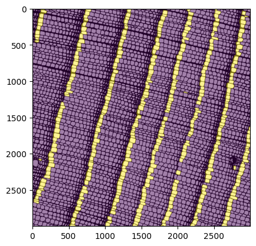
The next step involves grouping the cells located at boundaries (last cells and right cells) together according to the boundary that they define. To do this, we leverage functionality from the networkx module to build a graph that will store adjacencies between cells located at boundaries.
# Crearing a graph using previously filtered nodes and edges
# A node is created for each last cell and right cell
# An edge is created for each adjacency between any of those cells (right-right, last-last, and last-right)
graph, boundary_array, right_to_region, region_to_right, rightcells_df = qrings.find_boundaries(celldata,
adjacency,
lastcells,
rightcells,
expanded_labels)
# A function to visualize adjacencies stored in the graph
def plot_graph(cell_df, adj_graph, pixel_size):
cell_copy = cell_df.copy()
cell_copy.set_index('label', inplace = True)
for i in adj_graph.edges:
x1 = cell_copy.loc[i[0]]['centroid-1']
y1 = cell_copy.loc[i[0]]['centroid-0']
x2 = cell_copy.loc[i[1]]['centroid-1']
y2 = cell_copy.loc[i[1]]['centroid-0']
plt.plot(np.array([x1, x2]) / pixel_size, np.array([y1, y2]) / pixel_size, c = 'blue')
return
# Showing the adjacenencies as blue lines on top of the cell array
plt.figure(figsize = (12, 12))
plt.imshow(prediction, cmap = 'gray')
plt.imshow(np.isin(expanded_labels, list(rightcells)), alpha = 0.5)
plot_graph(celldata, graph, pix_to_um)
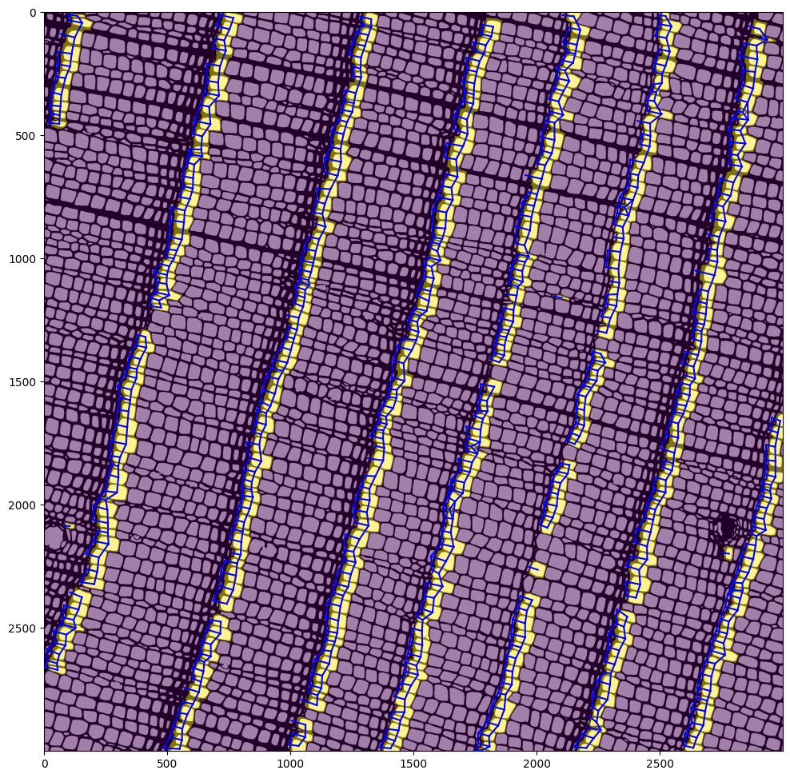
We can now use this graph structure identify cell groups that can be reached from each other using the graph. In graph parlance, these groups are called “connected components”, and the networkx module conveniently provides the connected_components function for computing those.
The boundary regions are therefore identified as follows, with each boundary region identified with a different color:
boundary_tmp = boundary_array.astype(float)
boundary_tmp[boundary_tmp == 0] = np.nan
plt.imshow(prediction, cmap = 'gray')
plt.imshow(boundary_tmp, alpha = 0.8)
<matplotlib.image.AxesImage at 0x7f65d556d6d0>
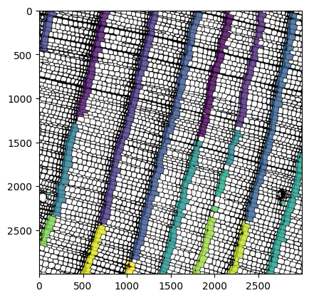
We have successfully grouped cells according to the ring boundary that they define, but as we can see, the result is rather fragmented as some cells were not properly recognized as being located at a boundary. The next step for qwanarings is to join those boundary regions together such that they can be used for defining growth rings.
Expanding and merging ring-transition boundaries
Merging ring boundary regions together is a critical task for the success of cell assignment to rings, but it must be done carefully to ensure that we do not introduce errors. For this reason, boundary region expansion is carried out in several steps that virtually guarantee merging accuracy by starting out with the the most trustworthy merges and ending with somewhat more uncertain approaches. Nevertheless, several checks are made along the way to prevent spurious merges. Each of these steps is detailed below, but an overview may be useful at this point:
1- Individual cells that directly connect two boundary segments together (so-called “common neighbors”) are first used to merge segments. 2- Pairs of cells that allow to connect boundary segments together (so-called up-down pairs) are also used to merge segments. 3- At this stage, cells that had not been initially identified as “right cells” are considered based on slightly more permissive criteria. If these are adjacent to any of the segments identifed thus far, they are added to those. 4- Finally, all pairwise segment extremities (the top-most cell and bottom-most cell of each segment) are checked for their distance to each other, and segment extremities that are mutually nearest to each other are merged together (provided that some other criteria are also met, which we will see below).
For this part of the analysis, we will be focusing on right cells (the first earlywood cells of a given ring) as they provide more robust features and are easier to identify that “last cells” for merging segments together. The next code chunk filters the objects that we have been working with so far such that they include only right cells.
# Using the dictionary to update the array (image) of boundary regions
boundary_array = qrings.create_boundary_array(right_to_region, expanded_labels)
The first step involves finding cells that are located at the extremities of boundary regions, which can be achieved with the function get_extremities:
# Finding the cells that are located at the extremities od each region
# Such cells are classified as "up" (top of the region) or "down" (bottom of the region)
# Both up_extremities and down_extremities are dictionaries mapping region ID to cell labels
up_extremities, down_extremities = qrings.get_extremities(region_to_right, rightcells_df)
# Let us plot the up extremities in red and down extremities in orange
up_df = rightcells_df.set_index('label').loc[list(up_extremities.values())]
down_df = rightcells_df.set_index('label').loc[list(down_extremities.values())]
plt.imshow(boundary_array)
plt.scatter(x = up_df['centroid-1'] / pix_to_um, y = up_df['centroid-0'] / pix_to_um, s = 5, c = 'red')
plt.scatter(x = down_df['centroid-1'] / pix_to_um, y = down_df['centroid-0'] / pix_to_um, s = 5, c = 'orange')
<matplotlib.collections.PathCollection at 0x7f65d55c74d0>
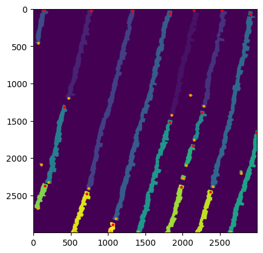
Extending further from those cells, we can find the cells that are vertically adjacent to them (so-called neighbors) using the function get_extremity_neighbors. This function also identified which such neighbors are shared between segments (common_neighbors) or form a pair which can be used to merge segments (up_down_pairs).
# common_neighbors: a set of cell labels that are vertically adjacent to two segments
# up_down_pairs: a list of cell pairs (tuples of cell label IDs) that link two segments together
# remaining_labels: cells vertically adjacent to segments that cannot be used to merge segments together
# upward_neighbors: a dictionary that stores cells vertically adjacent to the top of each segment
# downward_neighbors: a dictionary that stores cells vertically adjacent to the bottom of each segment
common_neighbors, up_down_pairs, remaining_labels, upward_neighbors, downward_neighbors = \
qrings.get_extremity_neighbors(up_extremities, down_extremities, celldata)
We can now use that information to merge segments based on shared adjacent cells, first using common neighbors using the function integrate_commons. The plot below shows the newly added cells with the common neighbors that were used for the merge plotted on top as red points.
boundary_array = qrings.integrate_commons(upward_neighbors,
downward_neighbors,
common_neighbors,
boundary_array,
expanded_labels)
# Subsetting the DataFrame of cells to the common neigbors used for the merge
common_df = celldata.set_index('label').loc[list(common_neighbors)]
# Showing the common neighbors on top of the boundary regions
plt.imshow(boundary_array)
plt.scatter(x = common_df['centroid-1'] / pix_to_um, y = common_df['centroid-0'] / pix_to_um, s = 5, c = 'red')
<matplotlib.collections.PathCollection at 0x7f65d546d310>
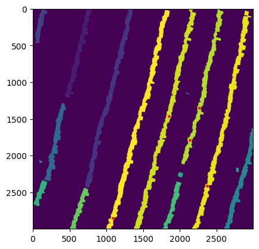
We can do the same thing for up-down pairs using the function integrate_updown. In the case of this image, only one such pair was identified.
boundary_array = qrings.integrate_updown(upward_neighbors,
downward_neighbors,
up_down_pairs,
boundary_array,
expanded_labels)
# Subsetting the DataFrame of cells to the up-down pairs used for the merge
common_df = celldata.set_index('label').loc[[label for pair in up_down_pairs for label in pair]]
# Showing the common neighbors on top of the boundary regions
plt.imshow(boundary_array)
plt.scatter(x = common_df['centroid-1'] / pix_to_um, y = common_df['centroid-0'] / pix_to_um, s = 5, c = 'red')
<matplotlib.collections.PathCollection at 0x7f65d540f390>
At this point, it is worth looking if the remaining segment neighbors (cells vertically adjacent to the segments that have not been merged into a segment yet) may have been overlooked as “right cells” in the first part of the analysis. Here, we will therefore try to identify right cells that were not initially identified but do meet some criteria of such cells, that is, they may be the first earlywood cells of a given ring. They will be added to the set of right cells at this stage if they meet either of two criteria :
their left neighbor is likely a latewood cell
the cell immediately adjacent to their left is smaller by some factor (
diameter_factor, defaults to 1.8)
Such cells are identified using the function get_candidate_cells and shown as red points in the following plot. Here, this represents three cells.
# We update the mapping of cells to their boundary region
cell_to_region, region_to_cells = qrings.map_cell_to_region(boundary_array > 0, boundary_array, expanded_labels)
# We find in the remaining cells adjacent to extremities the ones that show properties of ring transition
labels_to_integrate = qrings.get_candidate_cells(celldata, remaining_labels, lastcells, diameter_factor = 1.8)
# Subsetting the DataFrame of cells to the cell candidates
candidate_df = celldata.set_index('label').loc[list(labels_to_integrate)]
# Showing the common neighbors on top of the boundary regions
plt.imshow(boundary_array)
plt.scatter(x = candidate_df['centroid-1'] / pix_to_um, y = candidate_df['centroid-0'] / pix_to_um, s = 5, c = 'red')
<matplotlib.collections.PathCollection at 0x7f65d53851d0>
We can now update the boundary regions and the set of right cells using these cells.
# Integrating these new cells into the boundary array (if there are any)
if len(labels_to_integrate) > 0 :
boundary_array = qrings.integrate_candidates(boundary_array,
expanded_labels,
labels_to_integrate,
cell_to_region,
upward_neighbors,
downward_neighbors)
# Updating the right cells DataFrame with the cells that have been added since
integrated_labels = set(common_neighbors)
integrated_labels.update(label for pair in up_down_pairs for label in pair)
integrated_labels.update(labels_to_integrate)
new_rows = celldata[celldata["label"].isin(integrated_labels)].copy()
rightcells_df = pd.concat([rightcells_df, new_rows]).drop_duplicates(subset="label")
# Updating the dictionaries that map cells to their region ID and vice versa
cell_to_region, region_to_cells = qrings.map_cell_to_region(boundary_array > 0, boundary_array, expanded_labels)
# Let us see what we are working with at this stage
plt.imshow(boundary_array)
<matplotlib.image.AxesImage at 0x7f65d53e6fd0>
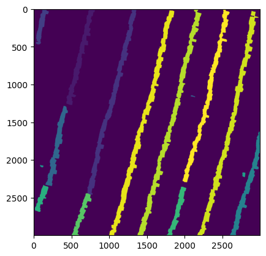
We have just merged new cells into boundary regions but we have yet to merge together such regions that this ahs made adjacent. The next chunk of code does that through functions get_segment_adjacency and merge_by_cells:
# Update the extremities of the ring segments
up_extremities, down_extremities = qrings.get_extremities(region_to_cells, rightcells_df)
# This function returns a list of tuples with labels of the cells that can be used to connect regions together
connected_cells = qrings.get_segment_adjacency(adjacency, cell_to_region, up_extremities, down_extremities)
# Merging the regions that contain the cells identified at the previous step
boundary_array, _ = qrings.merge_by_cells(connected_cells, cell_to_region, boundary_array, expanded_labels)
# Updating the dictionaries and extremities
cell_to_region, region_to_cells = qrings.map_cell_to_region(boundary_array > 0, boundary_array, expanded_labels)# Find the extrmities of the new ring segments
up_extremities, down_extremities = qrings.get_extremities(region_to_cells, rightcells_df)
plt.imshow(boundary_array)
<matplotlib.image.AxesImage at 0x7f65d5260e10>
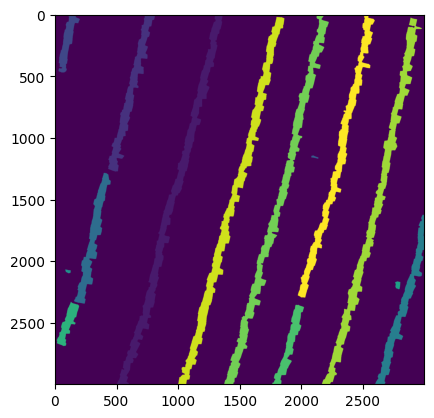
The steps above, which merge adjacent segments based on cells that can bridge the gap between them, can be repeated iteratively by setting a value superior to 1 as the --iterations argument to qwanarings. By default, only one such merging step is carried out, as is the case for this example.
Merging segments based on the distance between them
As we can see, some of the segments above have yet to be merged together. We have done much progress by working with segment adjacencies but we now need a more powerful approach based on distances between segment extremities, although we must be careful not to merge regions that do not belong together. To do so, we first generate a set of region pairs that should not be merged together because they contain cells belonging to the same radial file. Indeed, a given boundary region should only contain cells that belong to different radial files. This can be done with the function incompatible_regions.
# The output is a set containing tuples with pairs of regions that should not be merged together
incompatible_region_pairs = qrings.incompatible_regions(celldata, cell_to_region)
We find out which pairs of up/down segment extremities are mutually nearest to each other, filtering out the incompatible region pairs determined above, using the function get_nearest_extremity. This function also returns information on the other cells found in the neighborhood of potential pairs to match, in case we want to filter out some potentially spurious matches based on this. However, we will not be needing this for this image.
# nearest_extremity is a list of tuples containing the pairs of cells that are candidates for merging
nearest_extremity, neighborhood = qrings.get_nearest_extremity(rightcells_df,
cell_to_region,
up_extremities,
down_extremities,
incompatible_region_pairs)
# Displaying the pairs of cells to merge using lines on top of the image of boundary regions
pairs_df = celldata.set_index('label').loc[[label for pair in nearest_extremity for label in pair]]
plt.imshow(boundary_array)
for i in nearest_extremity:
pair_df = celldata.set_index('label').loc[list(i)]
plt.plot(pair_df['centroid-1'] / pix_to_um, pair_df['centroid-0'] / pix_to_um, c = 'red', linewidth = 2.5)
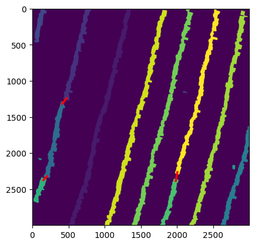
Before we merge those cells, we must ensure that they are compatible with being located along the same ring boundary. To do that, the angle between them is computed and compared against the angles in the region adjacency graph. The cells are considered valid for merging if the line between them runs roughly perpendicularly to the angle along which the cells have grown. In this case, the three pairs identified above meet that criterion. The function analyze_pairs_angles takes care of this:
# pairs_df: a DataFrame of metadata on the pairs considered and the computed angles
# valid_pairs: a list of tuples with the pairs of cells considered suitable for merging
# excluded: a list of tuples with the pairs of cells not considered suitable for merging
pairs_df, valid_pairs, excluded = qrings.analyze_pairs_angles(celldata, nearest_extremity)
# The various data objects describing ring boundaries are updated by merging these pairs
boundary_array, _ = qrings.merge_by_cells(valid_pairs, cell_to_region, boundary_array, expanded_labels)
cell_to_region, region_to_cells = qrings.map_cell_to_region(boundary_array > 0, boundary_array, expanded_labels)
# Showing the image of boundaries at this stage
plt.imshow(boundary_array)
<matplotlib.image.AxesImage at 0x7f65d51d8e10>
We can see that we have now succeeded to merge all the cells that belonged together at the same ring boundary. However, there are still spurious cells located throughout the image which we should remove before going forward. The function filter_boundaries takes care of this by removing all ring boundary regions with fewer than some number of cells (argument mininum-cells supplied through the command line, defaults to 4).
# mincells is usually supplied from the command-line, here we defined it to 4 in a previous code chunk
cell_to_region, region_to_cells = qrings.filter_boundaries(cell_to_region, region_to_cells, mincells = mincells)
boundary_array = qrings.create_boundary_array(cell_to_region, expanded_labels)
up_extremities, down_extremities = qrings.get_extremities(region_to_cells, rightcells_df)
plt.imshow(boundary_array)
<matplotlib.image.AxesImage at 0x7f65d515ac10>
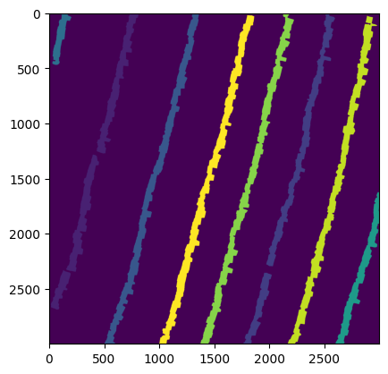
The above search for ring boundary segments to merge on distance can be repeated iteratively until all segments are merged together. By default, qwanarings will repeat this operation two more times. However, for the sake of this demonstration, we will not run it further because no further segments to merge would be detected. At the third and last iteration, qwanarings uses more lenient parameters by not setting any incompatible pairs that should not be merged, but it will prevent merging cells together if there are other extremities in their neighborhood.
Refining and filtering ring-transition boundaries
So far, we have identified ring boundaries and expanded them as much as we could using information from cell measurements and our regional adjacency graph. Before we use those boundaries for assigning cells to tree rings (and therefore to the year when they were created), we must formalize their sequence within the image and potentially merge segments that belong to the same ring boundary but have not been merge yet through other methods.
A first step towards doing this is to identify which borders of the image are reached by each of the boundary regions. Regions that run vertically along the image and come in contact with both the upper and lower limits of the image can reasonably be thought to represent true ring boundaries. However, regions instead border the leftmost and rightmost borders of the image, as is the case for three of the boundary regions in our image, represent edge cases that are also true ring boundaries and must be accounted for.
First we use the function classify_regions_by_axis to determine what borders of the image are touched by each of the boundary regions. This is done by computing the locations of the extremities of boundary regions using an idealized ellipse shape and checking whether these extremities cross the borders of the image. This generates, among other things, a sequence of region IDs that touch either the top or bottom of the image and can be used to determine the order of boundary regions in the image.
# region_classes: a dictionary that classifies boundary regions based on the image borders that they cross
# region_regions: a DataFrame of properties on the boundary regions computed with skimage.measure.regionprops
# seq : the sequence of region IDs touching the top and bottom of the image, used as a sequence to anchor the ring boundaries
region_classes, ring_regions, seq = qrings.classify_regions_by_axis(boundary_array, pix_to_um)
# Let us have a look at the sequence of regions at the top and bottom of the image
seq
/home/marc/Documents/gennaretti_lab/analyses/packages/qwanamiz/src/qwanamiz/rings_functions.py:1707: FutureWarning: `RegionProperties.major_axis_length` is deprecated starting in version 0.26 and will be removed in version 2.0. Use `RegionProperties.axis_major_length` instead.
major_len = prop.major_axis_length
{'top': [4, 1, 3, 11, 9, 2, 10], 'bottom': [3, 11, 9, 2, 10, 6]}
An alternate method of finding which regions are along the top and bottom border of the image relies on identifying regions have cells at the extremity that are near a border.
all_border_cells, upper_region_sequence, lower_region_sequence, \
matched_up, matched_down, unjustified = qrings.get_border_cells(rightcells_df,
cell_to_region,
up_extremities,
down_extremities,
image_height = expanded_labels.shape[0],
image_width = expanded_labels.shape[1],
border_margin = 75,
pix_to_um = pix_to_um)
print("matched_up: ", matched_up)
print("matched_down: ", matched_down)
matched_up: {1, 4}
matched_down: {6}
We have now determined what regions were adjacent to the upper and lower border of the image, and therefore represent regions on which to anchor the ring boundaries. However, although this is not the case in this image, it could be that are are still boundary segments in the middle of the image that have not been assigned to a valid ring boundary that runs across the image. Our next task is to identify those by first looking at the IDs of the boundary regions we find by running a set of horizontal lines (20 lines by default) across the image and tallying which boundary regions they cross. This is accomplished with the function get_region_sequences:
# y_positions: a list of y coordinates (in pixels) along which the sequence of regions was queried
# sequences: a list of lists with the regions crossed by eahc horizontal line
y_positions, sequences = qrings.get_region_sequences(boundary_array, n_lines=20)
plt.imshow(boundary_array)
for y in y_positions:
plt.axhline(y, c = 'red', linestyle = '--')
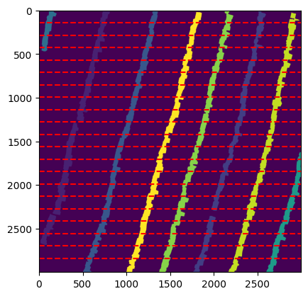
The list of region sequences encountered along each line is stored in sequences:
sequences
[[4, 1, 3, 11, 9, 2, 10],
[4, 1, 3, 11, 9, 2, 10],
[4, 1, 3, 11, 9, 2, 10],
[1, 3, 11, 9, 2, 10],
[1, 3, 11, 9, 2, 10],
[1, 3, 11, 9, 2, 10],
[1, 3, 11, 9, 2, 10],
[1, 3, 11, 9, 2, 10],
[3, 11, 9, 2, 10],
[1, 3, 11, 9, 2, 10],
[1, 3, 11, 9, 2, 10],
[1, 3, 11, 9, 2, 10, 6],
[1, 3, 11, 9, 2, 10, 6],
[1, 3, 11, 9, 2, 10, 6],
[1, 3, 11, 9, 2, 10, 6],
[1, 3, 11, 9, 2, 10, 6],
[1, 3, 11, 9, 2, 10, 6],
[1, 3, 11, 9, 2, 10, 6],
[3, 11, 9, 2, 10, 6],
[3, 11, 9, 2, 10, 6]]
In order to identify regions that could potentially be merged, we need to align the regions identified at each of the lines in a single rectangular matrix (here, we use a list of lists) with one horizontal line per row and one region per column. To do this, the function align_region_sequences internally builds a graph of precedence relationships such that the order of the regions along each horizontal line is preserved in the output matrix aligned. The output object regions contains the order of the regions across all rows. In addition to the sequence of regions found by get_region_sequences, the sequences of regions found earlier at the very top and very bottom of the image by the call to classify_regions_by_axis are added to the output matrix.
aligned, regions = qrings.align_region_sequences(sequences, gap_value=None, upper_seq=seq["top"], lower_seq=seq["bottom"])
aligned
[[4, 1, 3, 11, 9, 2, 10, None],
[4, 1, 3, 11, 9, 2, 10, None],
[4, 1, 3, 11, 9, 2, 10, None],
[4, 1, 3, 11, 9, 2, 10, None],
[None, 1, 3, 11, 9, 2, 10, None],
[None, 1, 3, 11, 9, 2, 10, None],
[None, 1, 3, 11, 9, 2, 10, None],
[None, 1, 3, 11, 9, 2, 10, None],
[None, 1, 3, 11, 9, 2, 10, None],
[None, None, 3, 11, 9, 2, 10, None],
[None, 1, 3, 11, 9, 2, 10, None],
[None, 1, 3, 11, 9, 2, 10, None],
[None, 1, 3, 11, 9, 2, 10, 6],
[None, 1, 3, 11, 9, 2, 10, 6],
[None, 1, 3, 11, 9, 2, 10, 6],
[None, 1, 3, 11, 9, 2, 10, 6],
[None, 1, 3, 11, 9, 2, 10, 6],
[None, 1, 3, 11, 9, 2, 10, 6],
[None, 1, 3, 11, 9, 2, 10, 6],
[None, None, 3, 11, 9, 2, 10, 6],
[None, None, 3, 11, 9, 2, 10, 6],
[None, None, 3, 11, 9, 2, 10, 6]]
An easier way to visualize the matrix of regions is to use the helper function plot_alignment, which presents an abstracted view of the seqeunce of regions and can be used for troubleshooting with difficult images. Here, the output makes it clear what the order and identity of the regions in our image.
qrings.plot_alignment(aligned, regions, names=None)
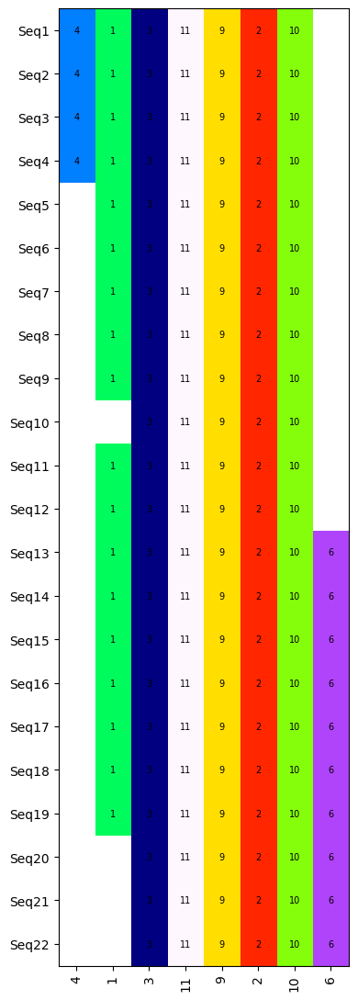
In case that any column only had a single non-None value in it, the remove_singleton_columns filters it out from further processing. Here, this does not actually remove any columns.
aligned = qrings.remove_singleton_columns(aligned)
If the region matrix had any regions pairs that could be merged into a single one because they occured at the same location in their respective upper/lower image border sequences, the function find_merge_candidates would identify those as candidates for merging. Here, there are no such candidate pairs.
candidates, cu, cl = qrings.find_merge_candidates(seq["top"], seq["bottom"])
valid_labels = set(celldata.index)
region_to_cells = {
r: [c for c in cells if c in valid_labels] for r, cells in region_to_cells.items()
}
candidates = qrings.filter_candidates(candidates, region_to_cells, celldata, max_overlap = 3)
print("Merge candidates: ", candidates)
Merge candidates: []
Next, the None values in each column are filled based on the most common value in each column if they exceed a given proportion of the values in the column (this proportion defaults to 0.79). Regions that have been identified as candidates for merging are excluded from filling as they will be handled later in the workflow. This step is done using the function fill_columns and the result is visualized below using plot_alignment.
aligned = qrings.fill_columns(aligned, candidates, 0.79, region_classes)
qrings.plot_alignment(aligned, regions, names=None)
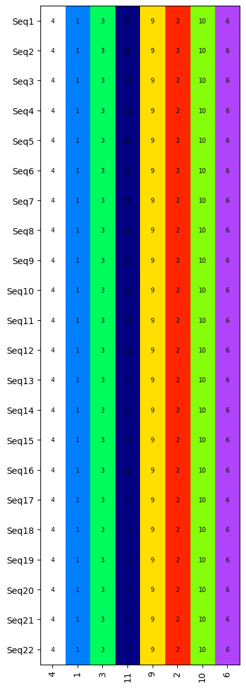
A few more steps allow to generate the final set of ring sequences.
incomplete = qrings.find_incomplete_regions(aligned)
final_merge = qrings.filter_incomplete_regions(incomplete_info=incomplete,
classifications=region_classes,
merge_candidates=candidates,
matched_up=matched_up,
matched_down=matched_down)
valid, duplicates = qrings.filter_pairs_overlap(final_merge, region_classes, aligned)
pair_extremities = {}
for r1, r2 in valid:
cell1 = qrings.get_extremity_cell(r1, up_extremities, down_extremities, region_classes)
cell2 = qrings.get_extremity_cell(r2, up_extremities, down_extremities, region_classes)
coord1 = qrings.get_coordinates(cell1, rightcells_df)
coord2 = qrings.get_coordinates(cell2, rightcells_df)
pair_extremities[(r1, r2)] = (coord1, coord2)
all_merge_pairs, solo_regions = qrings.select_regions_to_merge(pair_extremities, candidates, final_merge)
aligned_top, aligned_bottom = qrings.build_aligned_sequences(aligned, all_merge_pairs, final_merge)
missing_regions = (
{r for pair in all_merge_pairs for r in pair}
- (set(aligned_top) | set(aligned_bottom))
)
missing_regions.discard(None)
print("Missing selected:", missing_regions)
aligned_top, aligned_bottom = qrings.insert_missing_pairs(aligned_top, aligned_bottom, aligned, all_merge_pairs)
print("Top →", aligned_top)
print("Bottom→", aligned_bottom)
Selected pairs: set()
Solo regions: []
Missing selected: set()
Top → [4, 1, 3, 11, 9, 2, 10, 6]
Bottom→ [4, 1, 3, 11, 9, 2, 10, 6]
Assigning cells to tree rings
Now that we know the order of the boundary regions and the identity of the cells located at the boundaries (actually, the first earlywood cells of each ring), we can use those to draw ring boundaries and ultimately assign each cell in a dataset to its growth ring. This starts with the function find_ring_lines, which extracts the IDs of the first earlywood cells of each ring.
# Returns a dictionary with the ordered (from top to bottom of image) list of the first earlywood cells at ring boundaries
ring_lines, final_top = qrings.find_ring_lines(rightcells_df, region_to_cells, aligned_top, aligned_bottom)
if solo_regions or missing_regions:
crossings = qrings.check_ring_crossings(ring_lines,
rightcells_df,
new_boundaries,
pix_to_um)
ring_lines = qrings.fix_crossing_rings(ring_lines,
crossings,
aligned_top,
aligned_bottom,
region_to_cells,
rightcells_df)
# Let us display these lines in a plot to see what they look like
plt.imshow(prediction, cmap = "gray")
for _,labels in ring_lines.items():
ring_df = celldata.set_index('label').loc[labels]
plt.plot(ring_df['centroid-1'] / pix_to_um, ring_df['centroid-0'] / pix_to_um, c = 'red', linewidth = 3)
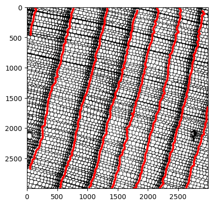
At this point, qwanarings will write to disk the order of the ring boundaries that it has automatically determined in a file with the suffix _edit.txt. This file can be manually edited to merge some segments or modify their order to match the expected results, should qwanarings output inaccurate results. It can then be processed with the script rings_edit to apply the changes and produce output that has been corrected accordingly. Here, we show how this file is initially generated when running qwanarings:
# Extract regions per ring
ring_regions = qrings.extract_ring_regions(ring_lines, cell_to_region, final_top)
# Save edit file
os.makedirs("test_output/test_image_outputs", exist_ok = True)
qrings.write_ring_file("test_output/test_image_outputs/test_image_edit.txt", ring_regions)
More details regarding the edition of tree-ring boundaries with the script rings_edit can be found in the package’s README page.
We are just one step away from being able to assign each cell to its ring: we just need to draw polygons that encompass the whole ring using those lines, which we can do using the function draw_polygons.
# The output is a list of 2-dimensional numpy arrays representing the coordinates of the polygons
ring_polygons = qrings.draw_polygons(cells = celldata,
ring_lines = ring_lines,
upper_sequence = final_top,
image_width = expanded_labels.shape[1] * pix_to_um)
plt.imshow(prediction, cmap = "gray")
for ring in ring_polygons:
plt.fill(ring[:, 1] / pix_to_um, ring[:, 0] / pix_to_um, alpha = 0.5)
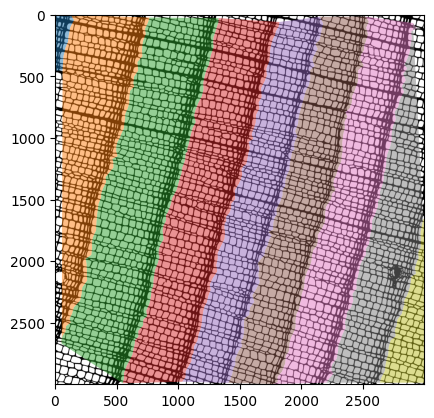
Using these polygons coordinates, we can determine which ring a cell belongs to based on an implementation of the winding number algorithm with the function assign_years. The year corresponding to the first ring is usually supplied to the command line as the argument first-year, but this value defaults to 1. Users can choose to supply this value when invoking qwanarings or adjust the year afterwards depending on their preference.
# Adds a column called 'year' to the cell metadata
celldata = qrings.assign_years(cells = celldata, polygons = ring_polygons, year0 = firstyear)
celldata, suspect_labels = qrings.correct_large_lastcells(celldata)
# Using the year column we can create an image that assigns a year to each pixel
# Create an image of cell assignment for display
celltemp = celldata.copy()
celltemp.set_index('label', inplace = True)
year_dict = celltemp['year'].to_dict()
year_image = np.vectorize(lambda x: np.nan if year_dict.get(x) is None else year_dict.get(x))(expanded_labels)
plt.imshow(year_image)
<matplotlib.image.AxesImage at 0x7f65d56747d0>
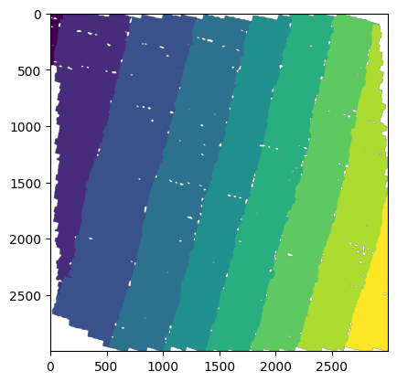
Outputs
By now, we are done with the computations and measurements made by qwanarings. The qwanarings script ends by saving the resulting data to a few files which al start with the common prefix and a suffix. Here is a short description of the contents of each file :
prefix + _ring_imgs.npz: the images generated as part of
qwanarings(the ring boundaries and the assignment of pixels to years).prefix + _rings.pkl: an object serialized with
pickle.dumpcontaining the ring boundaries defined by the first earlywood cells of each ring.prefix + _polygons.pkl: an object serialized with
pickle.dumpcontaining the ring polygons used to assign years to cells.prefix + _ringcells.csv: the DataFrame of measurements at the cell level, similar to that output by
qwanaflowbut with added columns added byqwanarings.prefix + _rings.csv: the DataFrame of measurements at the ring level.
prefix + _img.png: an image that summarizes the measurements and classification done by
qwanaringsand can be useful for validating the results or diagnosing issues.